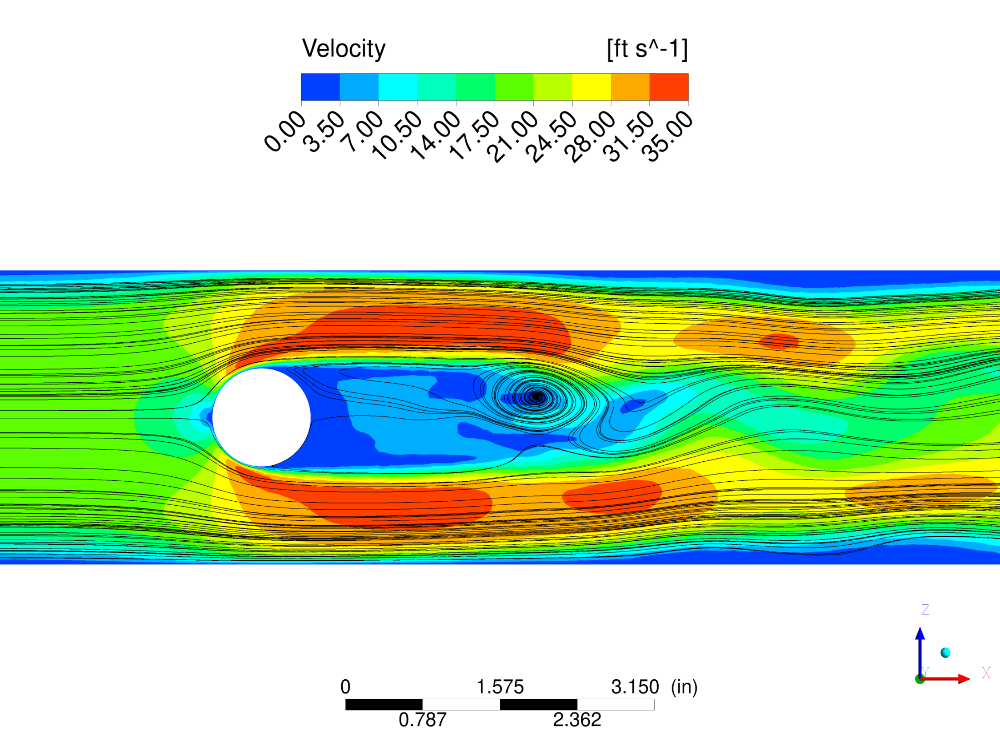
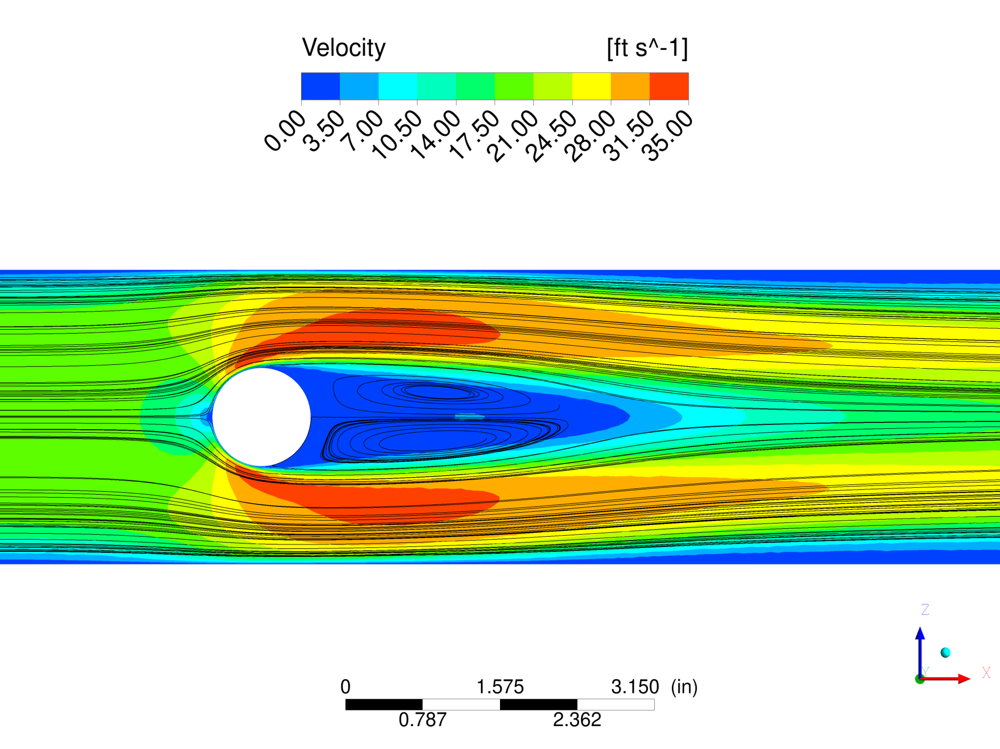
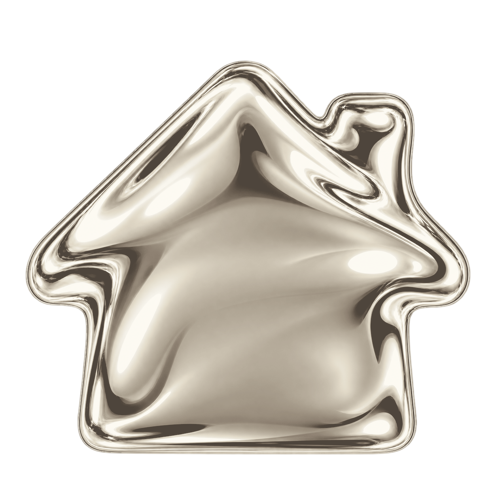
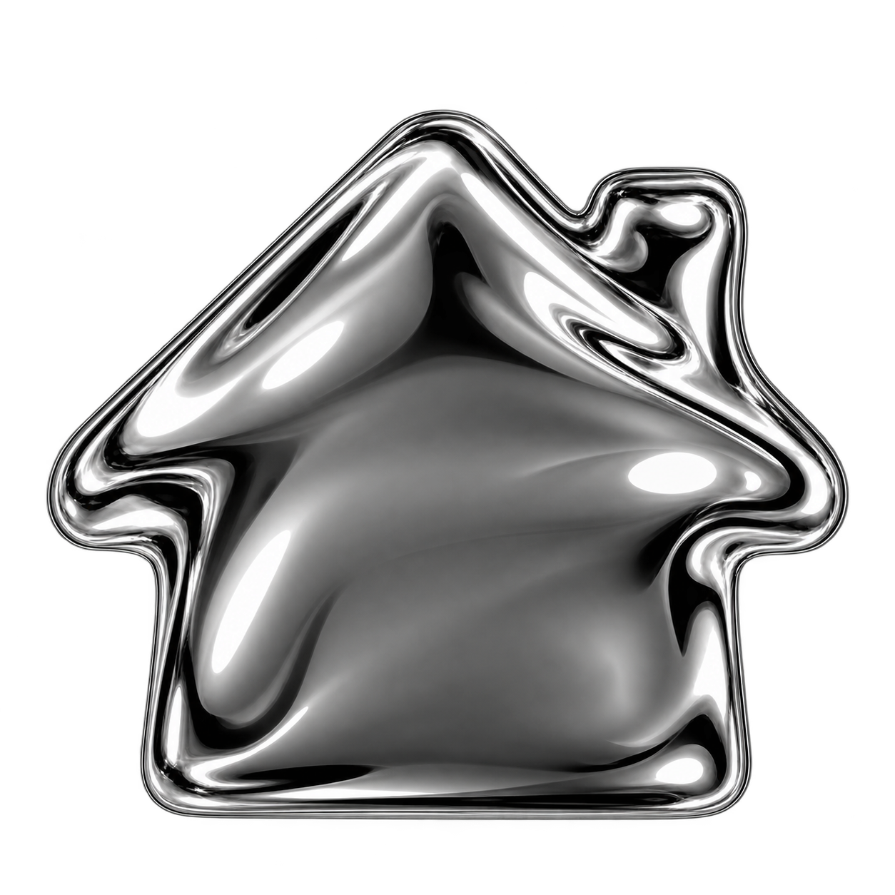

personally,
I enjoy doing pretty much anything with friends and loved ones. Whether that is traveling, or simply sitting around and chatting. I made this website because I wanted to have a carousel of my favorite photos. My good friend nick told me he was building a personal website, as a means to replace social media. I thought this was a great idea (so i stole it).
in my free time, I enjoy working out. Lifting weights with the sole purpose of looking fit keeps me from an unhealthy life. I also enjoy playing video games from time to time. I get the utmost enjoyment in using a keyboard and mouse to arrange pixels in a specific orientation for the sole purpose of mildly upsetting a random person on the internet.
professionally,
I am a mechanical engineer with a bachelor's and master's degree in mechanical engineering. In my master's program, I focused on computational modeling and simulation. In my day-to-day, I use computational fluid dynamics (CFD) to analyze components/cavities within jet engines.
Below is a very simple example I made for a CFD course at UConn.
Disturbances to air, such as the blockage in this pipe, cause turbulence.
Modeling turbulence is a complex task that requires significant
computational resources. This fun exercise demonstrates the differences
in resolution between two models.
The black lines represent streamlines, the path of the fluid flow.
Despite the fact that these two models were set up identically,
it does not take an engineer to spot the differences in the results.
(learn more)
i. Large Eddy Simulation (LES)

ii. Unsteady Reynolds-Averaged Navier-Stokes (URANS)

One could describe my job as very educated guessing :)

